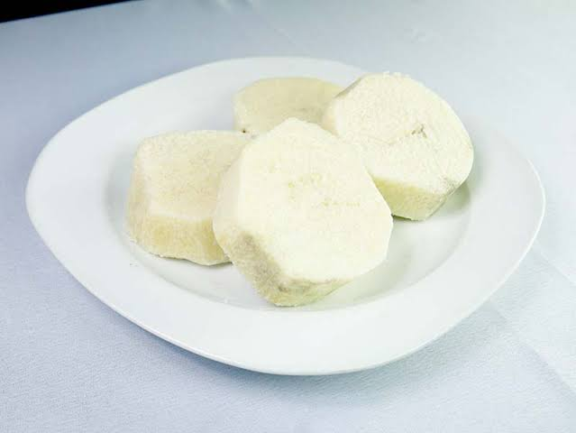
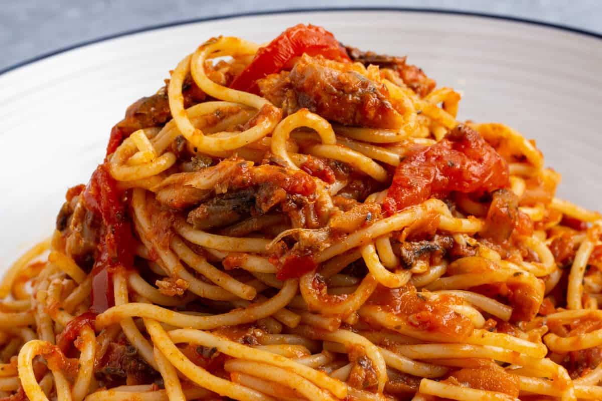
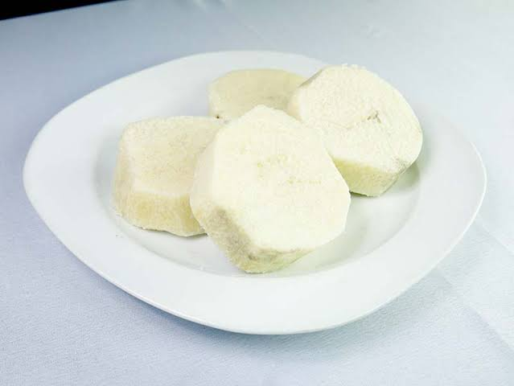
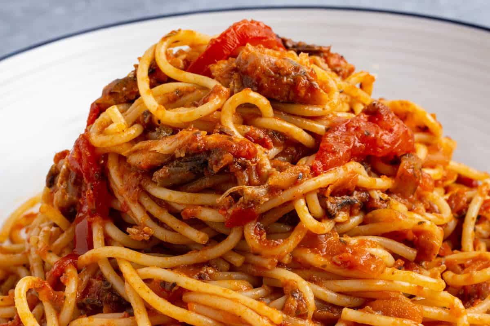
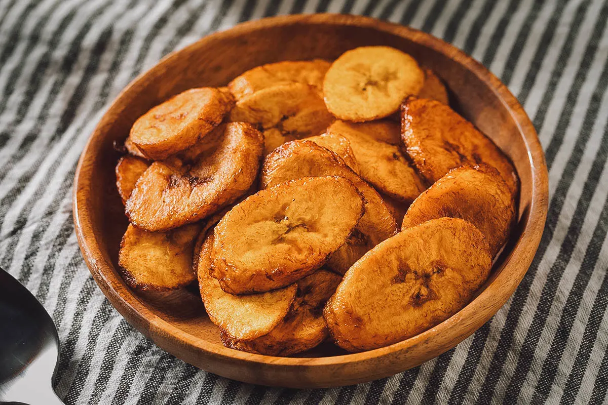
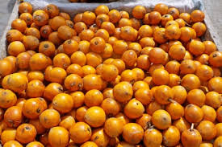
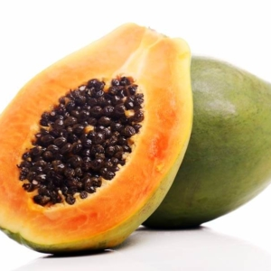
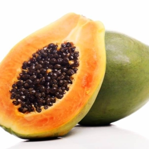
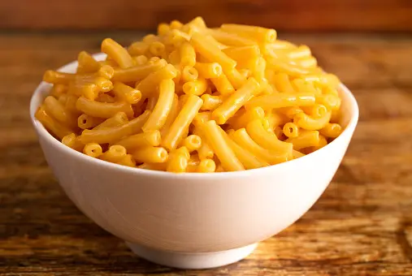
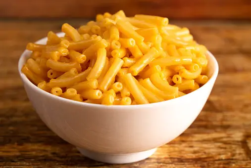

CLASSES OF FOOD
Carbohydrates
Carbohydrates are formed by green plants from carbon dioxide and water during the process of photosynthesis.
 



Protein
Proteins are made up of many building blocks, known as amino acids.

- platain
- beef
- fish
- beans
Vitamins
A vitamin is an organic molecule (or a closely related group of molecules called vitamins) that is essential for proper metabolic function in an organism.
 

- Vitamin A
- Vitamin B1
- Vitamin B2
- pawpaw
Fat
Fats and oils are esters of glycerol and three fatty acids. They are important in the diet as energy sources and as sources of essential fatty acids and fat-soluble vitamins, which tend to associate with fats.


- Vegetable oils
- fatty fish
- soya beans
- avocado
Minerals
minerals are essential nutrients that your body needs in small amounts to work properly.
 


- Cereals
- meat
- milk
- dairy
Fibre
Fiber helps regulate the body's use of sugars, helping to keep hunger and blood sugar in check.


- vegetables
- legumes
- nuts
- cereals